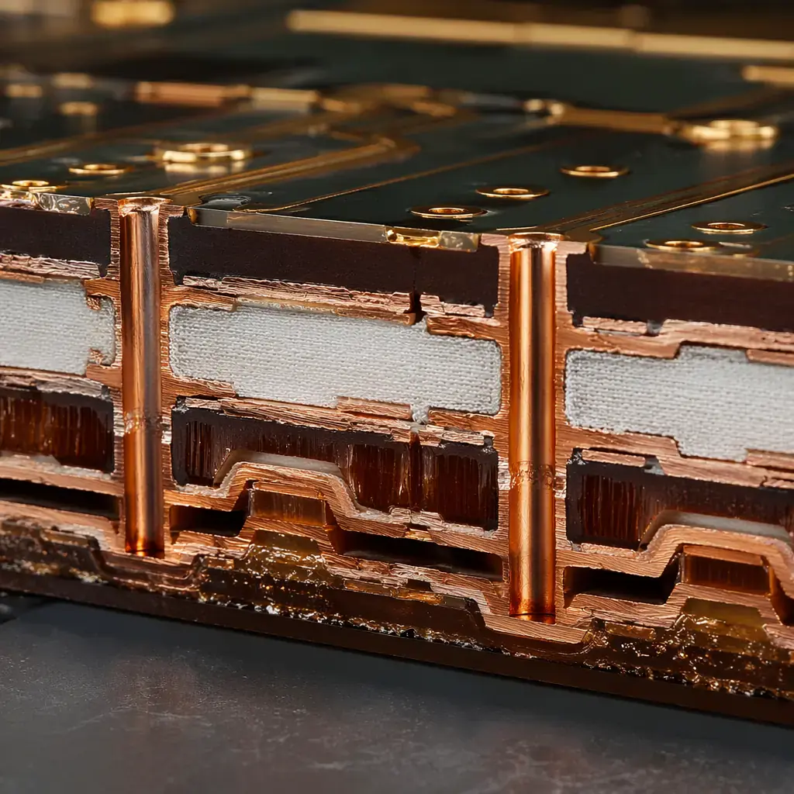
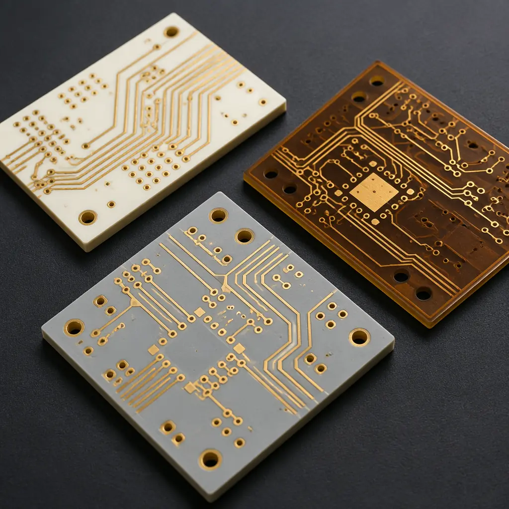

Commercial PCB manufacturing and aerospace-grade PCB manufacturing operate on different planets. Not metaphorically — literally, in terms of the thermal and vacuum environments the finished board must survive. A standard FR-4 board that performs flawlessly in an office server room will delaminate, outgas, and fail within hours in a low-Earth-orbit satellite bus where temperatures swing from -65°C in eclipse to +125°C in sunlight, and vacuum pressure is 10−6 torr. The procurement threshold for aerospace is not "can you build a 12-layer board" — every commercial shop can. The threshold is "can you document the pedigree of every laminate sheet, every copper foil lot, every plating bath analysis, with full traceability back to the material mill certificate, and survive a NASA-STD-8739.3 solder inspection where a single void over 15% of pad area is a reject?"
This guide maps the full standards and manufacturing landscape for aerospace and defense PCBs. It covers what commercial-grade suppliers typically miss, which material systems survive space environments, and how to qualify a supplier whose process controls match the paperwork burden that aerospace procurement demands. Every specification in this article references the capability envelope of a facility with polyimide, PTFE, and ceramic-filled substrate capability, 32-layer stackup experience, and controlled impedance at ±5% tolerance.
Bottom line: The cost delta between a commercial PCB and an aerospace-qualified PCB is 3×–12×, driven almost entirely by documentation, material traceability, and testing — not by fabrication complexity. An 8-layer Rogers 4350B board with ENIG finish costs roughly $42/panel in commercial spec; the same stackup with full AS9100 lot traceability, DPA coupon, and outgassing certification costs $190–$510/panel. The difference is paperwork, process control, and liability. Choose your supplier accordingly.

The Aerospace PCB Standards Stack — What Each Spec Actually Demands
Aerospace PCB procurement is not a single specification — it is a layered stack of standards, each addressing a different failure mode. Understanding which standards apply to your application is the first procurement decision, and choosing wrong means either overpaying for unnecessary certification or under-specifying and risking mission failure.
| Standard | Scope | Key PCB Requirements | Typical Application |
|---|---|---|---|
| IPC-6012DS | Space & military avionics | Class 3/A workmanship, 100% microsection coupon, no single-point plating voids, 25μm min barrel copper | Satellite, launch vehicle, missile guidance |
| MIL-PRF-31032 | Military printed boards | Material qualification by MIL-STD-202, thermal stress at 288°C/10s, bond strength per IPC-TM-650 2.4.9 | DoD avionics, radar, electronic warfare |
| MIL-PRF-55110 | Military rigid PCBs (legacy) | Glass transition ≥170°C, Z-axis CTE ≤3.5%, no measling/delamination after thermal stress | Legacy military systems (being superseded by 31032) |
| AS9100D | QMS for aerospace | Full material lot traceability, FAI per AS9102, counterfeit parts prevention, risk management per ISO 31000 | All civil and military aerospace supply chain |
| NASA-STD-8739.3 | Soldered electrical connections (NASA) | Void ≤15% of pad area, fillet height ≥100% lead thickness, no disturbed joints, documented operator certification | NASA flight hardware, ISS payloads |
| J-STD-001FS | Soldering requirements (space addendum) | Class 3 with space/harsh environment addendum: gold embrittlement removal (≥2.5μm gold → double-tinning), solder volume ≥100% | Space vehicles, satellite assemblies |
| ASTM E595 | Outgassing (vacuum) | TML ≤1.0%, CVCM ≤0.1% — materials that exceed these values deposit volatiles on optics and sensors | All vacuum applications (space, high-altitude) |
The critical insight for procurement: IPC Class 3 is not aerospace. Class 3 targets "high-performance electronic products where continued performance is critical and downtime cannot be tolerated" — that covers medical devices and server hardware. Class 3/A (the "A" is for aerospace/military avionics, introduced in IPC-6012DS) adds requirements that Class 3 omits: 100% microsection coupons (not sample-based), tighter annular ring requirements (25μm vs 50μm minimum), and prohibition of conductor rework. If your supplier says "we build to IPC Class 3," that is not the same as "we build to IPC-6012DS Class 3/A." Verify the exact standard revision and classification on the purchase order.
Material Selection for Extreme Environments — Beyond FR-4
Aerospace PCB material selection is a three-axis optimization: thermal range, dielectric stability, and outgassing compliance. Standard FR-4 (Tg 130–140°C) is unacceptable for any aerospace application — its Z-axis CTE of 50–70 ppm/°C above Tg will tear plated through-holes apart in thermal cycling, and it outgasses above the ASTM E595 threshold. The materials below represent the aerospace-viable subset of what a manufacturer with broad substrate capability should stock.
| Material | Dk @ 10GHz | Df @ 10GHz | Tg (°C) | Z-CTE (%) | Best For |
|---|---|---|---|---|---|
| Rogers RO4350B | 3.48 | 0.0037 | >280 | 3.5 | RF/microwave avionics, phased-array radar |
| Rogers RO4003C | 3.38 | 0.0027 | >280 | 4.0 | Low-loss RF, satellite comms |
| PTFE (Taconic TLY-5) | 2.20 | 0.0009 | N/A (amorphous) | Minimal | Extreme low-loss, space antenna feeds |
| Polyimide (Isola P95) | 3.80 | 0.0060 | 260 | 2.5 | High-temp flex/rigid-flex, engine compartment |
| Ceramic-filled (RO3003) | 3.00 | 0.0013 | >280 | 2.0 | mmWave, space-grade HDI |
| High-Tg FR-4 (Isola 370HR) | 4.04 | 0.0200 | 180 | 3.5 | Non-RF digital boards, cockpit displays (verify outgassing) |
The Z-axis CTE column matters more than Dk for non-RF boards. When a PCB thermal-cycles from -55°C assembly to +125°C operation, the laminate expands vertically at its CTE rate. If the plated copper barrel in the through-hole cannot stretch elastically to match, the barrel cracks — typically at the junction where the hole wall meets the inner-layer copper pad. This failure mode, called "post-separation" or "barrel fatigue," is the number-one field failure in aerospace PCBs and is almost impossible to detect with electrical test alone. A Z-CTE below 3.5% and minimum barrel copper of 25μm are the two most effective countermeasures.

Outgassing and Vacuum Compatibility — What ASTM E595 Really Measures
In vacuum (space, high-altitude UAV, decompression chamber), materials release volatile compounds — plasticizers, residual solvents, moisture, low-molecular-weight polymers. These volatiles condense on cold surfaces (optics, solar panels, thermal radiators) and degrade performance. ASTM E595 quantifies this with two metrics: Total Mass Loss (TML) — the percentage of a material's mass that evaporates in vacuum at 125°C for 24 hours — and Collected Volatile Condensable Material (CVCM) — the percentage that re-condenses on a 25°C collector plate. The pass/fail thresholds are TML ≤1.0% and CVCM ≤0.1%.
For PCB procurement, the outgassing risk sits in three places: the base laminate, the solder mask, and the conformal coating. Standard LPI (liquid photoimageable) solder masks — the green stuff on every commercial PCB — typically fail E595 because of residual photoinitiators and acrylic monomers. Aerospace PCBs require low-outgassing solder mask formulations (Taiyo PSR-4000 LEO or equivalent, specifically formulated for space) or no solder mask at all on critical RF surfaces. Conformal coatings for aerospace — Parylene C, silicone (specifically NuSil or Dow Corning space-grade), or urethane — must carry their own E595 certifications. A supplier who cannot provide material-level E595 test reports for every batch of solder mask and conformal coating is not an aerospace supplier.
Thermal Management for Aerospace — Not Just More Copper
Aerospace thermal management is harder than any other industry for one reason: there is no air. Convection cooling — the primary heat-removal mechanism in terrestrial electronics — does not exist in vacuum. A PCB in a satellite bus dissipates heat only through conduction (into the chassis) and radiation (into cold space). This shifts the entire thermal design strategy from airflow optimization to material selection and via architecture.
Three thermal strategies dominate aerospace PCB design:
- Embedded copper coin: A solid copper insert (typically 2–5mm thick) laminated into the PCB stackup directly under high-power components (GaN power amplifiers, FPGA ASICs). The coin conducts heat vertically into a chassis-mount thermal plane. Thermal conductivity: 390 W/m·K. Cost adder: $12–$30 per coin location.
- Thermal via array: A grid of plated through-holes (0.25–0.35mm diameter, 1.0mm pitch) filled with conductive epoxy or copper-plated closed, placed directly under the component thermal pad. The array conducts heat from the component die through the board thickness to a heatsink on the opposite side. Effective thermal conductivity of a filled via array: 8–15 W/m·K (epoxy-filled) to 30–60 W/m·K (copper-plated filled).
- Metal-core layer integration: For power distribution boards, an aluminum or copper core layer (0.5–2.0mm thick) is laminated as an internal layer, separated from signal traces by a thin dielectric with high thermal conductivity (1–3 W/m·K, typically Bergquist or Laird T-Preg). See also metal-core PCB design for non-aerospace thermal management.
For boards with mixed thermal requirements, rigid-flex designs can separate high-thermal areas onto rigid sections with copper coins while routing signal through flexible polyimide sections that naturally survive thermal expansion mismatch.
Vibration, Shock, and Mechanical Survivability
Launch vehicles subject payloads to 10–20 grms random vibration across 20–2000 Hz during ascent, plus pyrotechnic shock events (1000–10,000 g, 100–10,000 Hz) when stages separate. MIL-STD-810 Method 514.8 (vibration) and Method 516.8 (shock) define the test profiles. The PCB-level mitigations are not optional:
Staking and bonding — every component over 5 grams
Components heavier than 5 grams (large capacitors, transformers, connectors) must be staked to the board with aerospace-grade RTV silicone (NuSil CV-1142 or equivalent). Staking provides a secondary mechanical attachment that prevents solder joint fracture under vibration. For components under 5 grams in high-vibration zones, conformal coating provides partial mechanical support but does not replace staking for heavy parts.
Mounting hole reinforcement — plated through-holes with pad diameter ≥2× hole
Mounting holes carry all mechanical loads from chassis vibration into the PCB. MIL-PRF-31032 requires plated mounting holes with pad diameter at least 2× the hole diameter, and recommends non-plated relief areas in adjacent copper planes to prevent pad lifting. Eight mounting points per board minimum for boards over 100×100mm.
Underfill for BGAs and CSPs on flight-critical boards
Ball grid arrays and chip-scale packages larger than 15×15mm require capillary underfill epoxy to distribute thermal-mechanical stress across the entire package area rather than concentrating it at corner solder balls — the classical BGA failure initiation point in thermal cycling. For space applications, the underfill material itself must meet ASTM E595 outgassing limits, which eliminates most commercial underfills.
Conformal coating — Parylene C or space-grade silicone, 25–50μm
Parylene C (poly-para-xylylene) is deposited via vacuum vapor deposition, producing a pinhole-free conformal film at 25μm thickness. It provides moisture barrier, electrical insulation (5 kV/mil dielectric strength), and partial mechanical support. For assemblies that must survive both thermal vacuum and vibration, Parylene C is the default aerospace coating. It is also NASA-outgassing compliant per ASTM E595.
Quality Assurance and Traceability — The Paperwork Is the Product
In commercial PCB procurement, you receive a box of boards, an invoice, and a packing slip. In aerospace procurement, you receive a box of boards plus a documentation package that may weigh more than the boards themselves: Certificates of Conformance (CofC) for every material lot, plating bath analysis reports, microsection photomicrographs from the DPA coupon, solderability test results per J-STD-003, ionic contamination test results (≤1.56 μg/cm² NaCl equivalent), and a full First Article Inspection Report (FAIR) per AS9102. For a 12-layer board with six material lots, this package runs 40–80 pages.
The procurement checkpoint: ask your supplier to show you a sample AS9102 FAIR package for a previous order — not a template, an actual completed FAIR. A supplier who hesitates or offers a blank form has never shipped aerospace product. A supplier who sends a PDF with lot numbers, microsection images, and material certs in under 24 hours is the real thing. For additional supplier qualification guidance, see our supplier audit framework.
Key quality gates in aerospace PCB production:
Incoming material inspection — CofC verification against purchase spec
Every laminate panel, prepreg sheet, and copper foil lot must have its CofC checked against the purchase order specification before it enters production. This is AS9100 clause 8.4.3 — and it's the step most commercial shops skip because "the distributor said it's Rogers 4350B." Distributors make mistakes; the supplier who doesn't verify incoming materials ships bad boards.
DPA coupon — Destructive Physical Analysis on every production panel
A DPA coupon is a sacrificial section of the production panel (typically 25×25mm) that undergoes microsection analysis: cross-sectioned, potted, polished, and examined at 100–200× magnification for plating thickness, copper wicking, inner-layer separation, and void content. IPC-6012DS requires DPA on every panel for Class 3/A; commercial IPC Class 2 does not require it at all. PCB testing methods including microsection analysis are non-negotiable for flight hardware.
Thermal stress testing — 288°C solder float for 10 seconds minimum
Per IPC-TM-650 Method 2.6.8, the test coupon is floated on molten solder at 288°C for 10 seconds, then microsectioned to check for delamination, measling, or barrel cracking. This simulates assembly thermal shock plus a safety margin. MIL-PRF-31032 requires 100% of production panels to pass; a single failed panel triggers lot quarantine and root cause investigation.
Ionic contamination testing — ROSE test, ≤1.56 μg/cm²
Residual flux, plating salts, and handling contamination cause electrochemical migration and dendritic growth — essentially, metal filaments growing across PCB surfaces under DC bias in humid conditions. The Resistivity of Solvent Extract (ROSE) test per IPC-TM-650 2.3.25 measures total ionic contamination. Aerospace threshold: ≤1.56 μg/cm² NaCl equivalent. Commercial boards commonly ship at 2–5 μg/cm².
ITAR, EAR, and Export Controls — The Legal Layer
Defense PCBs fall under either ITAR (International Traffic in Arms Regulations, 22 CFR §§120–130) or EAR (Export Administration Regulations, 15 CFR §§730–774), depending on the end-use. ITAR covers items specifically designed for military use and listed on the United States Munitions List (USML). EAR covers dual-use items on the Commerce Control List (CCL). The distinction matters for procurement:
- ITAR-controlled PCBs require the manufacturer to be ITAR-registered with DDTC ($2,250/year registration), to have a Technology Control Plan (TCP) documenting physical and digital access controls for technical data, and to restrict access to U.S. persons (green card holders or citizens) unless an export license is in place. Foreign nationals in the factory — including engineers reviewing Gerber files — are a violation without a license.
- EAR-controlled PCBs (ECCN 3A611 or similar) may be manufactured by non-U.S. persons but still require export licensing for certain destination countries (Country Group D:1, including China, Russia, North Korea).
For non-U.S. buyers sourcing from a Chinese manufacturer like Huaxing: ITAR-controlled designs cannot legally be manufactured outside the United States without a DSP-5 export license from DDTC, which is rarely granted for PCB fabrication. If your PCB is ITAR-controlled, manufacture it in the U.S. If it is EAR99 or EAR-controlled with a license exception, it can be manufactured by qualified offshore suppliers with the appropriate EAR compliance documentation. Consult your export compliance officer — this is not a area to self-interpret.
Surface Finishes for Aerospace — Why ENIG Wins and HASL Shouldn't Exist
Aerospace PCBs overwhelmingly use ENIG (electroless nickel immersion gold, per IPC-4552) for two reasons: flatness and solderability shelf life. HASL (hot air solder leveling) produces an inherently non-planar surface — the solder meniscus around pads can vary by 25–50μm in height — which is incompatible with fine-pitch BGAs and QFNs common in aerospace digital processing boards. ENIG delivers flatness within 2–5μm across the entire pad surface. For a detailed comparison of ENIG vs HASL, including cost tradeoffs, see the surface finish reference.
For specific aerospace applications:
- Gold wire bonding: ENEPIG (electroless nickel, electroless palladium, immersion gold) provides a palladium barrier layer between nickel and gold that prevents nickel oxidation and enables reliable aluminum or gold wire bonding. This is the standard for bare-die and chip-on-board aerospace assemblies.
- Press-fit connectors: Immersion tin provides the best press-fit insertion characteristics. ENIG is acceptable but requires tighter hole-tolerance control (±0.05mm vs ±0.075mm for tin).
- RF surfaces: Immersion silver delivers the lowest insertion loss at microwave frequencies because silver has the highest conductivity of the practical finish metals. The tradeoff is shelf life — silver tarnishes in sulfur-containing atmospheres and must be soldered within 6 months or stored in sulfur-free packaging.
Procurement Checklist — Qualifying an Aerospace PCB Supplier
Use this nine-point checklist when evaluating a PCB manufacturer for aerospace programs. A supplier who cannot answer "yes" to all nine is not ready for flight hardware.
Can you provide a completed AS9102 FAIR package from a previous flight program?
A real FAIR package demonstrates process maturity. A template doesn't.
Do you microsection and inspect a DPA coupon from every production panel?
IPC-6012DS Class 3/A requires 100% DPA. Sample-based is Class 3 commercial — not acceptable for flight.
Can you provide mill test reports and CofC for every laminate lot?
Full material lot traceability to the laminate manufacturer's original certification. AS9100 clause 8.4.3.
What low-outgassing solder mask do you use? Can you provide ASTM E595 data?
Standard LPI solder masks fail outgassing. The answer should be a specific product name with E595 test reports.
What is your minimum annular ring for Class 3/A? Can you hold 25μm?
Class 3/A requires 25μm minimum annular ring. If they quote 50μm, they're building to Class 3, not 3/A.
Do you perform ionic contamination testing on every lot?
ROSE test per IPC-TM-650 2.3.25, threshold ≤1.56 μg/cm².
What is your TDR impedance test capability? Can you test on the production panel before routing?
Impedance control at ±5% requires TDR on every panel, not sample-based coupon testing.
Do you have documented procedures for counterfeit parts prevention?
AS9100 clause 8.1.4 requires a counterfeit parts prevention plan with documented supplier verification.
What is your conformal coating capability? Can you apply Parylene C to 25μm?
Parylene C requires vacuum deposition equipment — not a spray booth. Verify they have the equipment, not just the spec on a capability list.